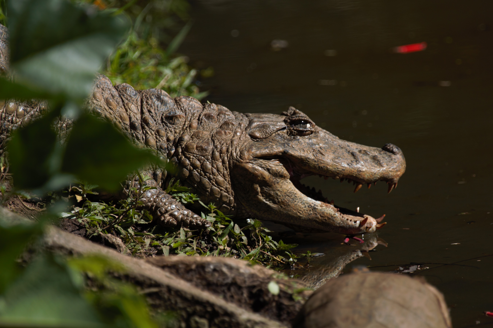
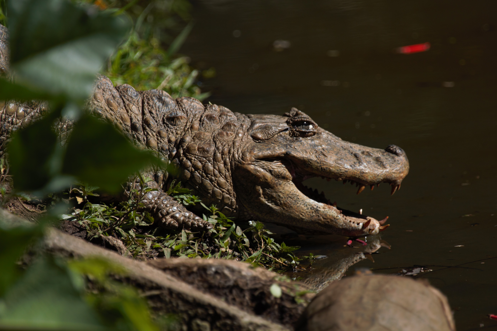

Zoológico de Guarulhos
Descubra a Vida Selvagem
Explore o mundo selvagem!

A onça-pintada é uma das espécies mais icônicas da fauna brasileira. Com sua pelagem única e olhar imponente, ela é conhecida por sua força e habilidade de caça. No Zoológico de Guarulhos, você pode aprender mais sobre o comportamento deste magnífico predador e sua importância para os ecossistemas naturais.
O Majestoso Leão: Rei da Selva

Conhecido como o "Rei da Selva", o leão é uma das criaturas mais poderosas do reino animal. Sua presença imponente, com uma juba característica, o torna um símbolo de liderança e coragem. No Zoológico de Guarulhos, você pode admirar de perto esse incrível predador e aprender sobre seu papel vital nos ecossistemas.
Embora sejam símbolos de poder, os leões enfrentam ameaças na natureza, como a perda de habitat e a caça ilegal. No Zoológico de Guarulhos, além de admirar essa magnífica espécie, você também aprenderá sobre os esforços de conservação que ajudam a garantir a sobrevivência dos leões nas próximas gerações.
Mamíferos: A Diversidade da Vida Terrestre


Os mamíferos formam um grupo diversificado de animais, que incluem desde pequenos roedores até grandes predadores. No Zoológico de Guarulhos, você poderá encontrar espécies incríveis como leões, onças e outros animais que são essenciais para a manutenção dos ecossistemas. Todos os mamíferos exibidos possuem características em comum, como a presença de pelos e o fato de amamentarem seus filhotes. Venha conhecer de perto essas fascinantes criaturas e descubra mais sobre seu comportamento, habitat e importância para o meio ambiente.
Aves: A Beleza e Liberdade dos Céus


As aves do Zoológico de Guarulhos encantam com suas cores vibrantes, cantos únicos e a habilidade de voar. Com uma enorme variedade de espécies, incluindo aves nativas do Brasil, como o tucano e o papagaio, você poderá observar de perto suas diferentes formas e comportamentos. As aves desempenham papéis essenciais no equilíbrio ecológico, como a dispersão de sementes e o controle de insetos. Explore o mundo fascinante das aves e saiba mais sobre sua adaptação a diferentes habitats e seus padrões migratórios.
Répteis: Sobreviventes de Eras Antigas
 



Os répteis são animais incríveis, conhecidos por sua pele escamosa e sangue frio. Eles foram capazes de sobreviver e prosperar em diversos ambientes ao longo de milhões de anos. No Zoológico de Guarulhos, você encontrará uma variedade de répteis, como cobras, lagartos e tartarugas, que mostram a incrível adaptabilidade dessa classe animal. Aprenda sobre as características únicas dos répteis, como sua forma de locomoção, alimentação e a maneira fascinante como regulam a temperatura do corpo.
Infraestrutura do Zoológico de Guarulhos: Conforto e Acessibilidade para Todos
O Zoológico de Guarulhos foi projetado para oferecer uma experiência agradável e acessível a todos os visitantes. Com diversas comodidades, garantimos que sua visita seja confortável e divertida. Explore nossas áreas:
- Área para Piquenique: Um espaço verde perfeito para relaxar e desfrutar de um lanche em família.
- Playground: Diversão garantida para as crianças, com equipamentos seguros e variados.
- Estacionamento: Facilidades para quem vem de carro, com vagas amplas e acessíveis.
- Centro de Educação Ambiental: Aprenda sobre a fauna e a flora com nossas atividades educativas.
- Museu de Ciências Naturais: Descubra mais sobre a biodiversidade e as maravilhas do mundo natural.
Abaixo, você encontrará um mapa detalhado do zoológico, que destaca essas e outras áreas importantes, como banheiros, fraldários, portaria e entradas, para que você possa planejar sua visita da melhor forma possível.

ADOTE ESTA IDEIA

O "Programa Bicho Legal", viabilizado pelas Leis municipais Nº 5923/2003 e 7638/2018, permite que empresas, instituições e particulares contribuam para a manutenção das espécies sob cuidados humanos no Zoológico de Guarulhos, auxiliando assim em um importante trabalho voltado para a conservação das espécies e da biodiversidade
Para saber mais informações de como você ou sua empresa pode nos ajudar, entre em contato!
Telefone: (11)2455-4999
E-Mail: gerencia.zooguarulhos@gmail.com